Если вам не интересно читать всё, что я написал, то рекомендую хотя бы глянуть "Самое интересное".
Регистрация
Работает только если администратор разрешил.
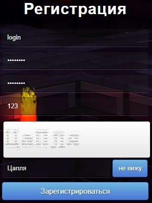
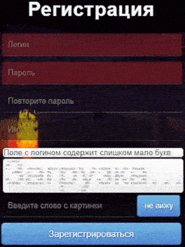
Перемещаться между полями можно используя Tab. Для отправки формы можно нажать Enter.
Ограничения:
Логин: количество символов от 3х до 31х. Может состоять только из букв латинского языка, цифр, "@№?*(){}[]:+-="
Пароль: аналогично логину
Имя: количество символов от 3х до 43х. Может состоять только из букв латинского и русского языка, цифр, ". "
Вход
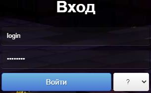
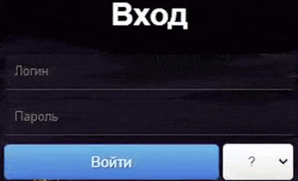
Как и в регистрации, можно использовать Tab и Enter.
Есть тут те, кто нажимал на "?"?
Думаю, комментарии тут излишни.
Выбор турнира
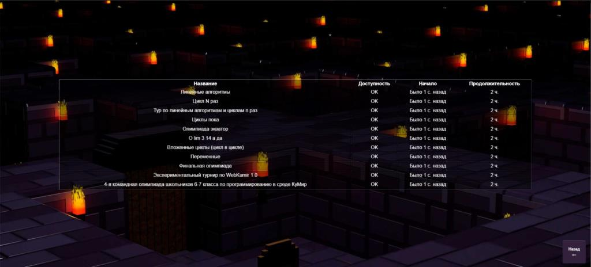
Доступные турниры
Доступные турниры отображаются с пометкой "OK" в столбике "Доступность".
Возможные причины отсутствия доступа
Для доступа нужно быть администратором
Время для открытия не пришло
Вы не состоите в группе, для которой проходит турнир
Карта
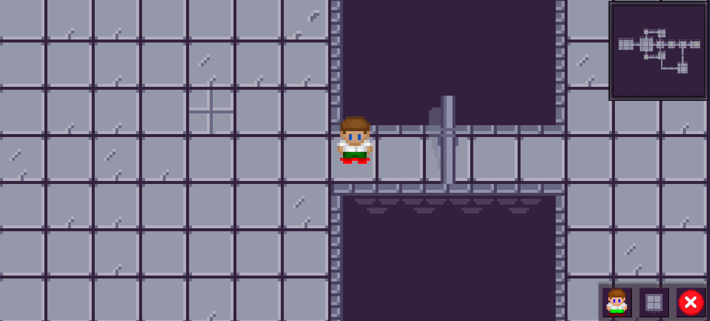
Где-то на серверах разработчика
Перемещение
Всего есть 3 варианта сдвинуться с места:
Через стрелки на клавиатуре(← ↑ → ↓)
Через WASD
Через жесты(удобно для телефонов *закадровый смех*)
Для открытия редактора, нужно "зайти в дверь".
Мини-карта
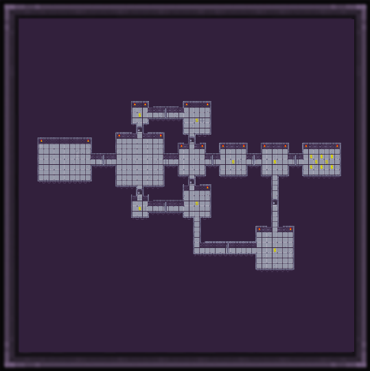
На одной из олимпиад мне предложили эту идей. Я её реализовал. Наслаждайтесь.
Отображается в верхнем правом углу.
Редактор персонажа
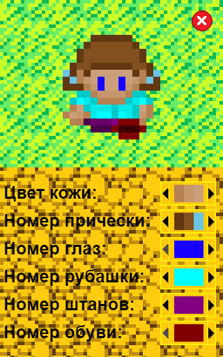
Только после 1,5 года после создания проекта появился женский персонаж
Ещё более бесполезная вещь, чем IE9 в
Открывается по кнопке в нижнем правом углу.
Изменение проекции
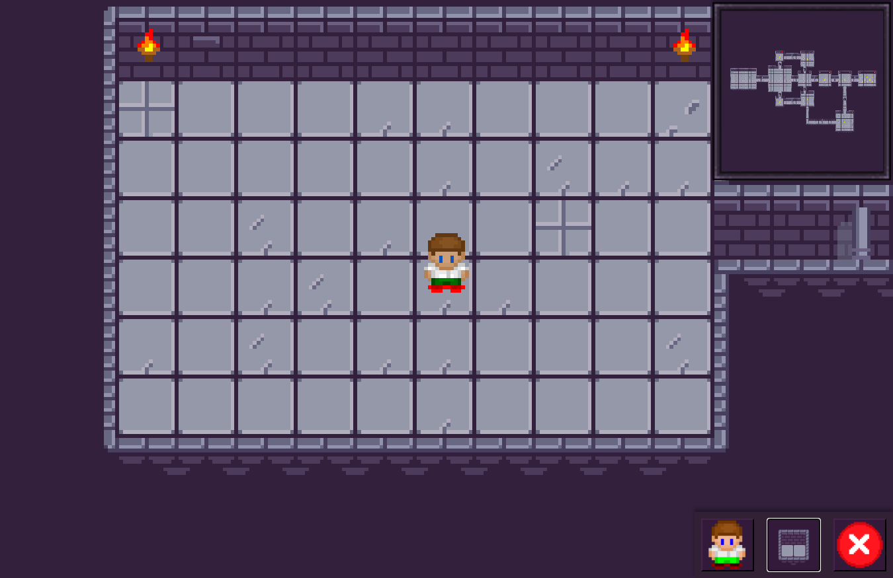
Всего 3 варианта. Можно увидеть факелы на стенах.
Кнопка выхода
Почему-то переносит на выбор сервера, а не на главную страницу.
Суть
Создана карта была в первую очередь для последовательного прохождения(и усложнения) задач. Определённые задачи позволят пройти к монеткам, которые дадут приоритет в топе.
Если проще, то для открытия двери нужно решить задачу. За верное решение вы получаете баллы.
Редактор
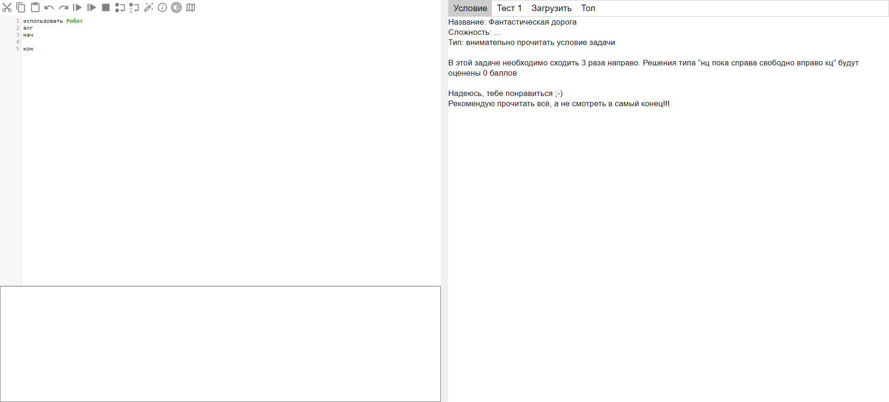
Что?Где?
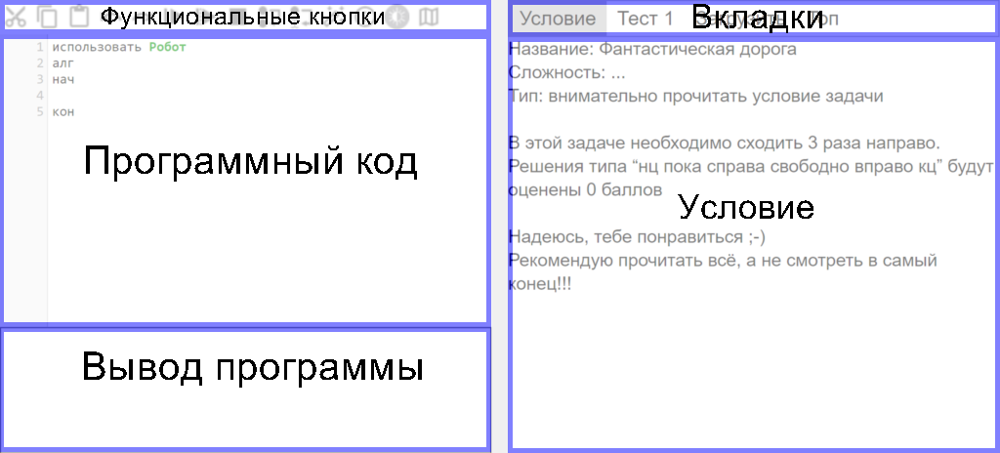
Первое что было реализовано в WebKumir - это редактор
Функциональные кнопки
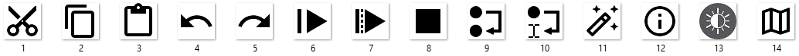
Вырезать (CTRL+X) ..... вырезать выделенный текст в буфер обмена
Скопировать (CTRL+C) ..... копировать выделенный текст в буфер обмена
Вставить (CTRL+V) ..... вставить текст из буфер обмена на место курсора
Отменить последнее действие (CTRL+Z) ..... отменить последнее действие
Повторить отменённое действие (Ctrl+Y) ..... отменить отмену
Быстрое выполнение (Shift + F9) ..... быстрое выполнение (без анимации)
Обычное выполнение (F9) ..... обычное выполнение (с анимацией)
Остановить выполнение (Esc) ..... остановить выполнение
Шаг (F2) ..... шаг (выполнить одну команду)
Выполнить до курсора (F4) ..... выполнить до курсора
Форматировать код (F8) ..... форматировать код
Помощь ..... Открывает помощь. Там много полезной информации
Сменить тему ..... Переключает светлую и тёмную тему
Вернуться на карту ..... Закрывает редактор и возвращает на карту
Программный код
Очевидно, здесь пишется программный код. Документация доступна здесь. Правда она давно не обновлялась...
Вывод
Очевидно, здесь вывод программы. Для вывода используется команда "вывод"
Вкладки
Здесь вы можете переключаться между вкладками. Всего их несколько видов:
Текст: Чаще всего используют для условия задачи
Расстановка: Это один из тестов программы. Вместе с расстановкой поставляются необходимое конечное состояние
Сдать задачу: ...
Сайт: Чаще всего используют для отображения топа
Файл: Не используется. Предназначен для отображения файлов *.pdf и тд
Основная задача
Для решения задачи вам надо написать и отослать программу, которая бы проходила все доступные и секретные тесты. После решения будет открыта дверь на карте, а также начислены баллы.
Самое интересное
Причин создавать WebKumir было много, как минимум прийти к нормальному редактору. Здесь будет описано самое основное, что было изменено.
Быстрое написание программы
Мы просто улучшили этот функционал. Поставьте курсор на нужную строчку и зажмите Esc. Теперь нажимая на клавиши со стрелками и пробел, вы можете писать программу с очень большой скоростью.
Esc + стрелка вверх - вставляет команду "вверх"
Esc + стрелка вправо - вставляет команду "вправо"
Esc + стрелка вниз - вставляет команду "вниз"
Esc + стрелка влево - вставляет команду "влево"
Esc + пробел - вставляет команду "закрасить"
Быстрое отображение
Вам хочеться ещё быстрее писать программы? У нас есть решение: два раза кликаете по кнопке с быстрым запуском. Теперь вы сразу видете результат работы программы.
Тёмная тема
Тут и так все понятно. У меня везде стоит тёмная тема, а в WebKumir нет. После долгих раздумий я наконец то добавил этот функционал.
Форматирование кода
В большинстве IDE это было реализовано, а чем мой редактор отличается от них?
Cоветчик
Теперь когда вы пишете программу, вам будут предлагаться варианты. По клавише Tab, можно будет выбрать вариант.
Информация
Ну помощь никогда не бывает лишней. По кнопке (i) теперь можно посмотреть всё что вам надо.
Переключение
В топе вы можете перемещаться между задачами (просто тыркнув на букву, обозначающюю определёную задачу)(вы ограничены только задачами, к которым вы имете доступ).
Есть идеи?
Пишите на dmitriytsenekov@mail.ru (ну или хоть в предложку vk.com/webkumir). Буду ждать)